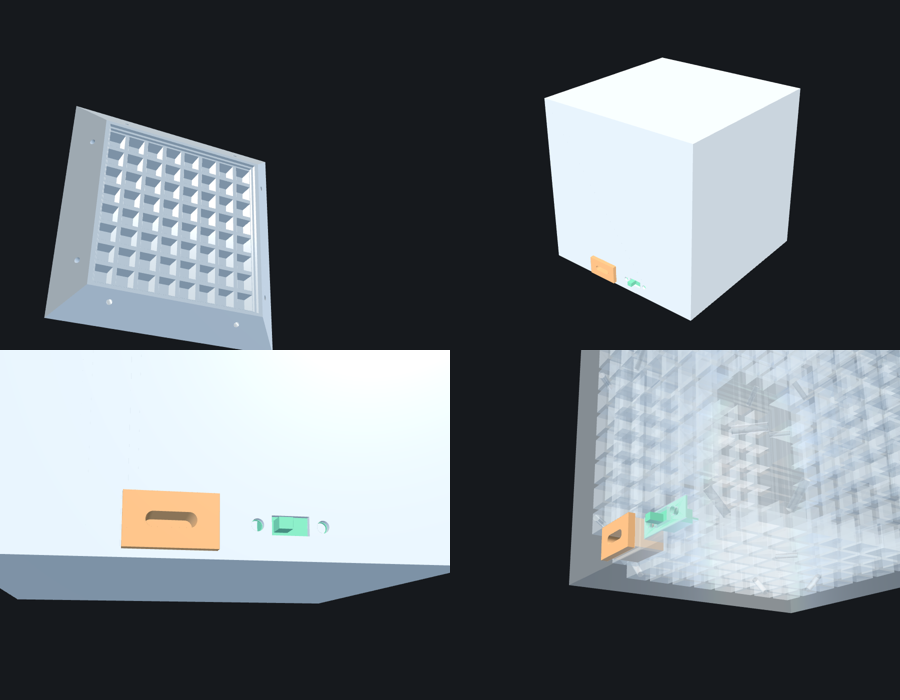

A translucent resin case for the 8×8×8 Gravity Cube. Six mitred face shells each hold one 65 × 66 mm WS2812 panel behind an 8×8 light grid, with a USB-C socket and a power switch on the bottom edge.

Source: github.com/psytraxx/gravity-cube-rs/case